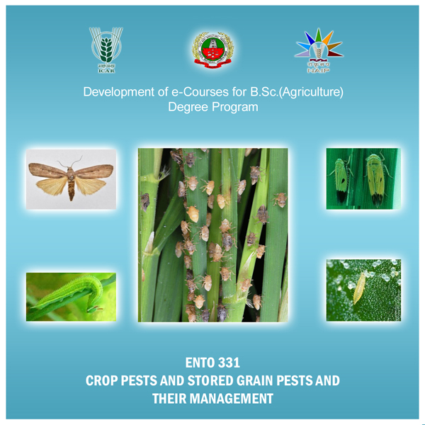

Home
Lecture 01 - Rice
(General)
Lecture 02 - Rice
(Borer)
Lecture 03 - Sorghum
Lecture 04 - Wheat & Maize
Lecture 05 - Black Gram
Lecture 06 - Red Gram
Lecture 07 - Coconut
Lecture 08 - Oil Seeds 1
Lecture 09 - Oil Seeds 2
Lecture 10 - Cotton
(Sap)
Lecture 11 - Cotton
(General)
Lecture 12 - Sugarcane
(Borer)
Lecture 13 - Sugarcane
(Sap)
Lecture 14 - Sunhemb
Lecture 15 - Tobacco
Lecture 16 - Mango
Lecture 17 - Citrus
Lecture 18 - Banana
Lecture 19 - Guava
Lecture 20 - Apple
Lecture 21 - Brinjal
Lecture 22 - Chillies
Lecture 23 - Cucurbits
Lecture 24 - Cruciferous Vegs.
Lecture 25 - Tuber Vegetables
Lecture 26 - Amaranthus
Lecture 27 - Onion
Lecture 28 - Pepper
Lecture 29 - Tea & Coffee
Lecture 30 - Rose & Jasmine
Lecture 31 - Ornamental
Lecture 32 - Stored Grain
CROP PESTS AND STORED GRAIN PESTS AND THEIR MANAGEMENT
